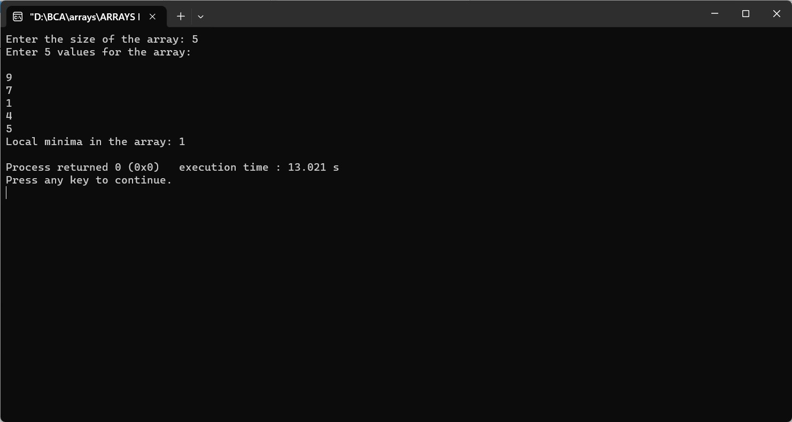

Find the local minima in the array
#include
void findLocalMinima(int arr[], int size) {
if (size < 3) {
printf("There are no local minima in the array (array size is too small).\n");
return;
}
printf("Local minima in the array: ");
if (arr[0] < arr[1]) {
printf("%d ", arr[0]);
}
for (int i = 1; i < size - 1; i++) {
if (arr[i] < arr[i - 1] && arr[i] < arr[i + 1]) {
printf("%d ", arr[i]);
}
}
if (arr[size - 1] < arr[size - 2]) {
printf("%d ", arr[size - 1]);
}
printf("\n");
}
int main() {
int size;
printf("Enter the size of the array: ");
scanf("%d", &size);
int arr[size];
printf("Enter %d values for the array:\n", size);
for (int i = 0; i < size; i++) {
scanf("%d", &arr[i]);
}
findLocalMinima(arr, size);
return 0;
}
